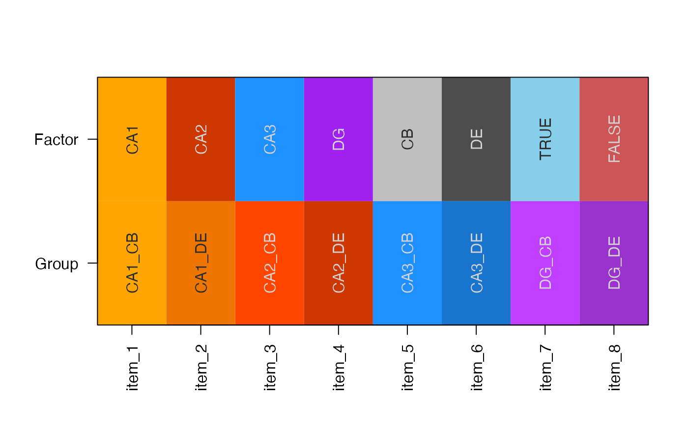

Group colors used for Farris data
colorSub
character vector of R color names, named by the experiment factors, sample groups, and boolean values TRUE and FALSE.
The colorSub object is simple a vector of colors,
named by the experimental factors, the sample groups,
and boolean TRUE and FALSE.
#> CA1 CA2 CA3 DG CB #> "orange" "orangered3" "dodgerblue" "purple" "grey75" #> DE CA1_CB CA1_DE CA2_CB CA2_DE #> "grey30" "orange1" "darkorange2" "orangered1" "orangered3" #> CA3_CB CA3_DE DG_CB DG_DE TRUE #> "dodgerblue1" "dodgerblue3" "darkorchid1" "darkorchid3" "skyblue" #> FALSE #> "indianred3"# Split into a list, just for visualization colorSubType <- ifelse(grepl("_", names(colorSub)), "Group", "Factor"); colorSubL <- split(colorSub, colorSubType); if (require(jamba)) { showColors(colorSubL); }#>